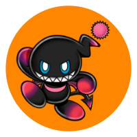
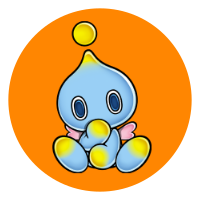
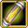
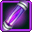
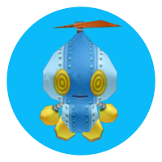
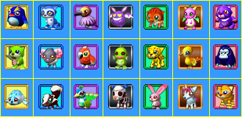
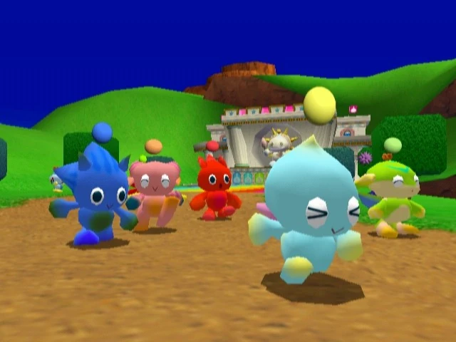
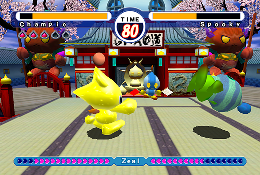

Stage: 00
INTRODUCTION
This guide will introduce you to the basics of raising Chao, and a couple tips to make things go smoother. Chao are small creatures hatched from eggs that inhabit Earth. They were introduced in Sonic Adventure, and make another appearance in this game. Depending on your choices for raising them, your Chao will turn out differently, so have fun and see how your Chao look!
Note: this is specifically for Sonic Adventure 2 Battle. In the Dreamcast version, or without DLC, you may have differences in Chao leveling and no access to Chao Karate.
Stage: 01
TYPES OF CHAO
In Sonic Adventure 2, you can evolve your baby Chao into 3 different alignments! Their appearances will change depending on which one you get.
Hero Chao
You can evolve your Chao into a Hero Chao by raising it with a Hero character (Sonic, Tails, or Knuckles).
You can abuse it with a Dark character as well, but... why would you do that?
Additionally, feeding it Hero Fruit will gradually form it to Hero.
Dark Chao

You can evolve your Chao into a Dark Chao by raising it with a Dark character (Shadow, Dr. Eggman, or Rouge).
You can abuse it with a Hero character as well, but... are you a monster?
Additionally, feeding it Dark Fruit will gradually form it to Dark.
Neutral Chao

You can evolve your Chao into a Neutral Chao by raising it equally with both Hero and Dark characters.
How cute are they! The Chao we know and love from Sonic Adventure 1.
Stage: 02
CHAOS DRIVES
Chaos Drives are consumables for your Chao you find regularly during levels, mostly when you defeat enemies. They level your Chao up in different areas depending on the Drive color:
-

Swim -

Fly - Run
- Power
They will also change the look of your Chao! Your Chao will gain a type after its first evolution (including neutral), and the second evolution will gradually happen over time.
Omochao Tip

There is a glitch in this game to have infinite Chaos Drives. I recommend it if you’re trying to get your Chao to high levels. It requires you to stand in front of your Chao, just enough so you can grab the Drive back from them when they finish. If it works, you’ll know -- you’ll still have the Drive!
Stage: 03
ANIMALS
Similar to Chaos Drive, across different stages you’ll find different kinds of animals. Some of these may be stage exclusive, so hunt around! These little guys will also level up your Chao in different areas. However, unlike Chaos Drives, these may lower your level in other areas, so be careful!
- Swim
- Fly
- Run
- Power
- Random
- Mythical
- Ghost

If you feed your Chao animals, they will also gain appearance and personality traits based on what animal they’ve consumed! The skeleton dog is unique, as it can clear the appearance traits. You can grow your Chao in so many different ways!
Omochao Tip
The chaos drive glitch works for animals, too!
Stage: 04
CHAO RACES
You can send your little guys to race each other! All skills will eventually matter for this one -- if you want to complete all races, I’d advise at least level 70, however, you may have to grind all the way to level 99 depending on your Chao. You’ll unlock more races as you complete them, but they’ll get even more difficult. You must complete all races if you’re going for the emblems.

- Beginner Race
- Jewel Race
- Challenge Race
- Hero Race
- Dark Race
- Party Race
Stage: 05
CHAO KARATE
You can also have your Chao face off against other opponents in Chao Karate! This mode is exclusive to SA2 Battle. Your Swim, Fly, Run, Power, and Stamina stats are converted to Defense, Stealth, Speed, Power, and Health respectively. You’ll also need to grind a decent amount to complete these -- but it’s also required to earn emblems!

- Beginner
- Standard
- Expert
- Super